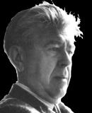

René Magritte nasce a Lessines, in Belgio, il 21 novembre 1898; studia all'Accademia di Bruxelles dal 1916 e comincia a svolgere un'attività pittorica influenzata dalla ricerca d'avanguardia.
Nel 1922 sposa Georgette Berger e inizia a lavorare in una fabbrica di carta da parati come disegnatore; nel 1925 dirige la rivista d'avanguardia "Oesophage", ma l'esperienza sarà breve: della rivista uscirà un solo numero.
Nel 1926 scopre la poesia surrealista, conosce la pitura di De Chirico attraverso Marcel Lecomte ed entra in contatto col gruppo parigino. Ancora a Bruxelles colabora alla rivista "Marie" e dipinge una delle prime opere surrealiste: "Le jockey perdu".
Nel 1927 si trasferisce a Parigi e partecipa per tre anni all'attività el gruppo surrealista. In questo stesso anno comonciano le sue esposizioni: la prima personale è a Bruxelles, alla galleria "Le Centaure", l'anno successivo espone alla galleria "L'Epoque" e partecipa all'"Exposition surréaliste" della galleria "Goemans".
Nel 1930 torna definitivamente in Belgio e nel 1931 tiene una personale alla "Salle Giso".
Tornato in patria, Magritte si iscrive al Partito comunista belga e nel 1934 disegna per Breton la copertina di "Qu'est ce-que le surrealisme?". La sua pittura è inizialmente influenzata dalla spazialità del primo De Chirico ma è una pittura "difficile", anche se Magritte dichiarerà: "La mia maniera di dipingere è assolutamente banale ed accademica. Importante nella mia pittura è ciò che essa mostra".
Magritte realizza degli accoppiamenti incongruenti che spiazzano nella loro apparente semplicità: rappresenta cose riconoscibili (un sasso sospeso, una pipa, un quadro sul cavalletto di fronte a una finestra aperta sullo stesso paesaggio rappresentato nel quadro) ma, decontestualizzandole, fa della pittura un mezzo di conoscenza, uno strumento lingiustico che in realtà non permette di essere davvero utilizzato "immediatamente", perchè il rapporto tra la "cosa" e la forma che la rappresenta, o la parola che la designa, è mutato, prevede un'attenzione maggiore del normale, una relazione più complessa.
Pittore figurativo ha un repertorio ridotto, ricorrente e iconicamente asai riconoscibile. Muore a Bruxelles nel 1967.